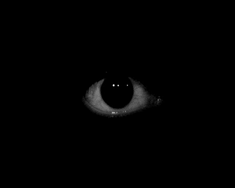
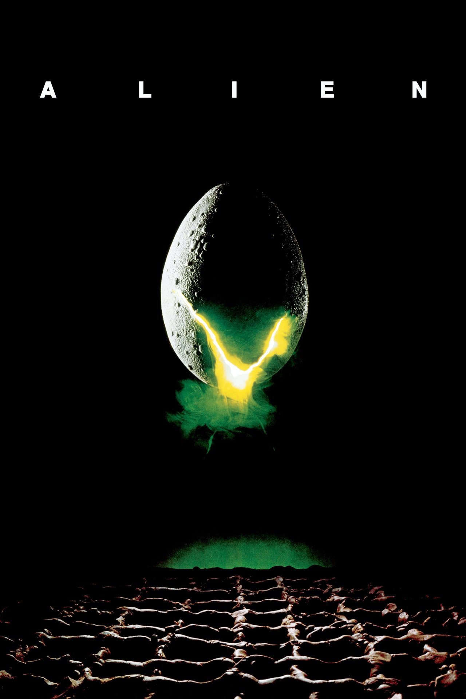
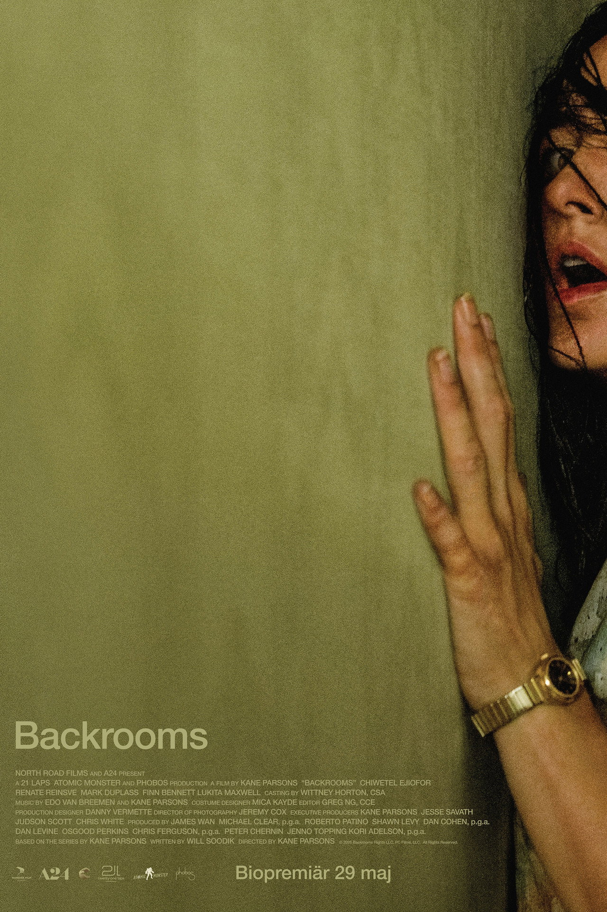

CASE#0001
INCANTATION
A mother, her child and a broken taboo... how far will she go? A very creepy materpiece that makes you sit on the edge of your seat from start to end. "Hou-Ho-Xiu-Yi, Si-Sei-Wu-Ma".[2022]

This is a blogg about horror movies that I think everyone should watch atleast once in their life. You will only find peakness here
CASE#0001
A mother, her child and a broken taboo... how far will she go? A very creepy materpiece that makes you sit on the edge of your seat from start to end. "Hou-Ho-Xiu-Yi, Si-Sei-Wu-Ma".[2022]
CASE#0002

Humans in space stumble upon a deadly lifeform, what can go wrong? The first movie in the amazing movie-series following the story of the Alien, unraveling the mystery of its origin. A terrifying perfect life form. The start of Ellen Ripley`s and the Alien`s story. "The perfect organism" [1979].
CASE#0003
This movie is peak for one reason: the creepy home movies shown in the movie. They are extremely unsettling and at the same time brilliant. To be able to create such clips and paint them in such a way takes talent. Watch as how these movies unrawel the mystery: who shot them, and why? [2012]
CASE#0004

The long-awaited story to be made into a movie! Yellow, bright lighted hallways that are infinite, leading into peculiar-architectural rooms and buildings, giving us an unsettling feeling. The more you learn about the backrooms, the scarier it gets. One might start feeling a phobia for backrooms after this movie.